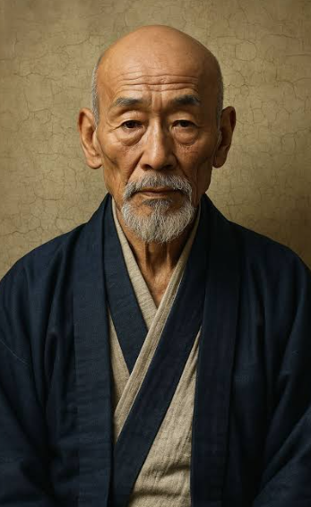

Katsushika Hokusai was a famous Japanese artist and printmaker of the Edo period. He created paintings, drawings, illustrated books and colour woodblock prints. He studied under the artist Katsukawa Shunshō before developing his own distinctive artistic style.
Hokusai became especially famous for his landscape prints and his ability to represent movement, nature and everyday life in imaginative compositions. His most famous series, Thirty-six Views of Mount Fuji, includes the widely recognised print The Great Wave off Kanagawa.
His work had a major influence on Japanese printmaking and later became important to artists and art movements outside Japan. Hokusai continued experimenting with art throughout his long career.